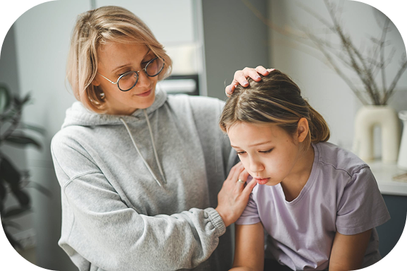

Поддержать своего близкого человека на его пути выздоровления
Методическое указание для родителей
Короткий ориентир для тех, кто рядом с ребёнком или подростком и хочет понять, как действовать без лишней паники.

Мы сделали указание, чтобы помочь вам:
Понять, как помочь в трудную минуту
Распознать симптомы РПП и отслеживать динамику болезни
Укрепить взаимоотношения, чтобы добиться результатов вместе
Что важно понимать о РПП
Проблемы с едой у детей и подростков редко сводятся к капризам. За ними могут стоять тревога, стресс, семейные перемены или особенности восприятия тела.
Откуда это берётся
Иногда первые сигналы заметны ещё в раннем возрасте: ребёнок плохо чувствует голод, долго ест одну порцию или не понимает, когда наелся. К подростковому периоду картина часто становится яснее — зацикленность на весе, усталость, тревожность, проблемы со сном.
Основные формы
Чаще всего встречаются анорексия, булимия и эпизоды, когда еда съедается большими порциями без ощущения контроля. У каждого варианта — свои признаки, и диагноз по одному симптому ставить нельзя.
Почему это серьёзно
РПП бьёт не только по настроению. Организм теряет витамины и минералы, страдают кости, зубы, сердце, иммунитет. Поэтому нужна связка: врач, психотерапия и поддержка дома — а не один «совет из интернета».
На что обратить внимание
Подростковый возраст — время поиска себя. Но некоторые изменения в питании и отношении к телу стоит замечать особенно внимательно.
Ограничения и страх веса
Частые отказы от еды, разговоры о фигуре, жёсткие диеты или тренировки «до изнеможения». Вес может не расти, хотя рацион вроде бы нормальный.
Срывы и компенсация
Периоды, когда съедается очень много, а потом — рвота, слабительные или изнуряющие нагрузки «чтобы сжечь». Такие эпизоды часто стараются скрыть.
Потеря контроля
Большие порции за короткое время, потом — вина или стыд. Сам подросток говорит, что «не может остановиться».
Изменения в быту
Отказ от совместных обедов, раздражение на разговоры о еде, постоянная усталость, тревожность. Иногда тело прячут под мешковатой одеждой.
Когда не паниковать
Один сложный день — не повод для тревоги. Но если поведение держится неделями и мешает учёбе, общению и самочувствию — имеет смысл разобраться глубже.
Разговор дома
Полезно говорить о еде спокойно — не как о «хороших и плохих» продуктах, а как о том, что питание даёт силы и нормальное настроение. Так проще заметить, когда тема вдруг становится болезненной.
Рост, вес и возраст
Три показателя, за которыми педиатры смотрят с рождения. Они показывают, хватает ли организму ресурсов для развития.
- Динамика важнее одного замера. Педиатрические шкалы и кривые роста помогают увидеть тенденцию, а не реакцию на цифру «вчера–сегодня».
- У всех разная норма. Генетика, активность и темп развития влияют на вес — сравнивать с «идеалом из интернета» бессмысленно.
- Рацион в балансе. Белки, жиры и углеводы нужны для роста. Если сомневаетесь в меню — обсудите его с детским диетологом.
- Резкие изменения — к врачу. Похудение или набор без видимой причины — повод для очного осмотра, а не для домашних экспериментов с диетами.
Как поддержать ребёнка
Если подозреваете РПП — не закрывайте глаза и не пытайтесь «вылечить силой». Вот с чего обычно начинают семьи.
Запишитесь к специалисту
Начните с педиатра или врача, который работает с РПП. При необходимости подключат психотерапевта или психиатра. Чем раньше начнётся разговор — тем лучше.
Не ругайте за тарелку
«Ну ешь уже» или «ты сама виновата» только усиливают стыд. Лучше сказать: «Я рядом, мне важно, как ты себя чувствуешь».
Разберитесь в теме
Базовые материалы о РПП помогают понять, что происходит и чего ждать от лечения. Подробнее — в разделе «Про РПП» на платформе.
Спокойствие дома
Еда не должна быть полем битвы. Не давите мнением, не изолируйте ребёнка «пока не поправится». Поддержка и предсказуемый быт важнее идеальной порции.
Опора для себя
Группы для родителей — офлайн или онлайн — снимают ощущение, что вы остались один на один с проблемой.
Дайте время
Привычки и отношение к еде меняются медленно. Отмечайте маленькие шаги, а не только «идеальный результат».
Форматы помощи и участие семьи
Лечение РПП редко сводится к одному приёму у психолога. Обычно это несколько направлений сразу.
КПТ
Когнитивно-поведенческая терапия учит замечать мысли, из-за которых усиливается страх еды или веса, и постепенно менять привычные реакции.
ДБТ
Диалектическая поведенческая терапия помогает справляться с сильными эмоциями и импульсами. Часто применяется при булимии.
Семейная терапия
Разбирает, как устроено общение дома и что можно изменить, чтобы ребёнку стало безопаснее.
Школа и друзья
Учителя могут знать о состоянии (если семья согласна), не комментировать вес и не устраивать «разборы» при всех. Хобби даёт передышку от навязчивых мыслей.
Медикаменты
Только по назначению врача, когда другие методы недостаточны. Самостоятельно давать «таблетки для похудения» или слабительные нельзя.
Чего не делать
«Перекормить», устроить жёсткую диету или контролировать каждый укус без врача обычно только ухудшает ситуацию.